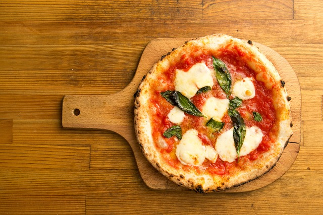

A Few Changes

Posted by Robert Phares on January 22nd, 2025
I made some edits to this new version(Version 2) of the website. I edited the max width to 650px to the article. This means everything below the navigation bar and everything above the footer has a max width of 650px. I am not sure how this will look on phones and tablets. When I upload it we will find out and will make some changes to the next version if needed. I also made the text larger for the navigation bar and the article. This was suggested by Jonas Schmedtmann, who is a web instructor on udemy. He also has his own personal website with tips and tricks at jonas.io. I also deleted the aside because not sure what to put there. Finally, I added a "Current Version" to the navigation bar incase someone goes to a previous version.